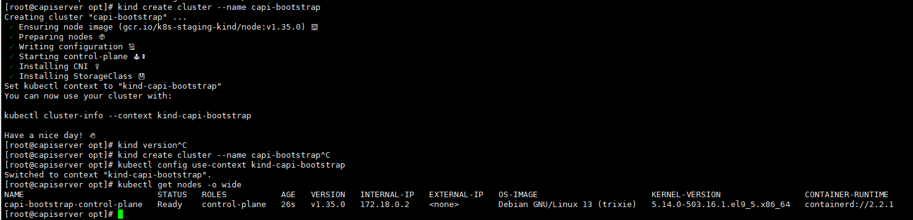

📝 Author
Birat Aryal — birataryal.github.io
Created Date: 2026-02-16
Updated Date: Monday 16th February 2026 22:44:11
Website - birataryal.com.np
Repository - Birat Aryal
LinkedIn - Birat Aryal
DevSecOps Engineer | System Engineer | Cyber Security Analyst | Network Engineer
Management Vm
Containerd, Kubectl, git
Install containerd
yum install -y epel-release
sudo yum config-manager --add-repo https://download.docker.com/linux/centos/docker-ce.repo
sudo yum install -y docker-ce docker-ce-cli containerd.io docker-buildx-plugin docker-compose-plugin
sudo systemctl enable --now docker
sudo systemctl status docker
Install govc
curl -L https://github.com/vmware/govmomi/releases/latest/download/govc_Linux_x86_64.tar.gz -o govc.tgz
tar -xzf govc.tgz govc
sudo install -m 0755 govc /usr/local/bin/govc
Tip
Using this govc could be installed and used later on for the configuration in this section.
Install kubectl
curl -LO "https://dl.k8s.io/release/$(curl -L -s https://dl.k8s.io/release/stable.txt)/bin/linux/amd64/kubectl"
sudo install -o root -g root -m 0755 kubectl /usr/local/bin/kubectl
Download Clusterctl
wget https://github.com/kubernetes-sigs/cluster-api/releases/download/v1.12.2/clusterctl-linux-amd64
sudo install -m 0755 clusterctl-linux-amd64 /usr/local/bin/clusterctl
Install kind
curl -Lo kind https://kind.sigs.k8s.io/dl/latest/kind-linux-amd64
chmod +x kind
sudo install -m 0755 kind /usr/local/bin/kind
kind version
Create Bootstrap Cluster
kind create cluster --name capi-bootstrap
kubectl config use-context kind-capi-bootstrap
kubectl get nodes -o wide
{kind=link}

Initialize the Cluster
Info
To initialize the cluster api, vSphere, clusterctl requires the following variables to be set in ~/.cluster-api/clusterctl.yaml as following:
-
Create the Configuration file in the user's home directory.
Bashmkdir -p ~/.cluster-api vim ~/.cluster-api/clusterctl.yaml -
Add the Contents inside the
cluster.yamlfile.YAMLproviders: - name: cluster-api type: CoreProvider url: https://github.com/kubernetes-sigs/cluster-api/releases/v1.12.2/core-components.yaml - name: kubeadm type: BootstrapProvider url: https://github.com/kubernetes-sigs/cluster-api/releases/v1.12.2/bootstrap-components.yaml - name: kubeadm type: ControlPlaneProvider url: https://github.com/kubernetes-sigs/cluster-api/releases/v1.12.2/control-plane-components.yaml - name: vsphere type: InfrastructureProvider url: https://github.com/kubernetes-sigs/cluster-api-provider-vsphere/releases/v1.15.2/infrastructure-components.yaml
Tip
When the following command is executed:
clusterctl init
clusterctl performs the following:
1. Reads the provider configuration from:
~/.cluster-api/clusterctl.yaml
2. Downloads the provider manifests from the specified URLs.
3. Installs the required components into the management cluster, including:
- CRDs
- Controllers
- Webhooks
- RBAC permissions
- The controllers begin watching Cluster API resources and reconciling infrastructure state.
Note
Initialize the Cluster API providers using the following command:
clusterctl init --config ~/.cluster-api/clusterctl.yaml
{kind=link}
- Configure the IPAM so that it could be used for provisioning the IP for Clusters which are not in DHCP Network.
Bash
clusterctl init --ipam in-cluster kubectl get pods -A |grep ipam
Tip
All the pods should be running.
- Create the
ipool.yamlfile so that it could be used by the management cluster while creating the new VM.
apiVersion: ipam.cluster.x-k8s.io/v1alpha2
kind: InClusterIPPool
metadata:
name: <ippool Name>
namespace: default
spec:
addresses:
- <Network Start Range>-<Network End Range>
prefix: <Subnet Mask>
gateway: <Gateway>
Export the Environment Variables
Vcenter Environment Variables
The following environment variables are required for deploying Kubernetes clusters using Cluster API Provider vSphere.
- Create the secure environment file
/etc/capi-vsphere.envwhich would be used for the storing all the details for the vsphere deployment.
Warning
Do not commit real credentials or internal infrastructure values to a public repository.
Replace the placeholder values below with the appropriate values for your environment.
# vCenter credentials
export VSPHERE_USERNAME='<VCENTER_USERNAME>'
export VSPHERE_PASSWORD='<VCENTER_PASSWORD>'
export VSPHERE_SERVER='<VCENTER_FQDN_OR_IP>'
# vSphere infrastructure details
export VSPHERE_DATACENTER='<DATACENTER_NAME>'
export VSPHERE_DATASTORE='<DATASTORE_NAME>'
export VSPHERE_RESOURCE_POOL='<RESOURCE_POOL_PATH>'
export VSPHERE_FOLDER='<VM_FOLDER_PATH>'
export VSPHERE_NETWORK='<PORTGROUP_NETWORK_NAME>'
# Allow self-signed certificates if required
export VSPHERE_INSECURE='true'
# VM template used for node cloning
export VSPHERE_TEMPLATE='<VM_TEMPLATE_NAME>'
# Kubernetes API endpoint (VIP)
export CONTROL_PLANE_ENDPOINT_IP='<CONTROL_PLANE_VIP_IP>'
export CONTROL_PLANE_ENDPOINT_HOST='<CONTROL_PLANE_VIP_DNS>'
# Workload cluster metadata
export CLUSTER_NAME='<CLUSTER_NAME>'
export KUBERNETES_VERSION='<KUBERNETES_VERSION>'
export CONTROL_PLANE_MACHINE_COUNT='<CONTROL_PLANE_NODE_COUNT>'
export WORKER_MACHINE_COUNT='<WORKER_NODE_COUNT>'
# Network interface used by kube-vip
export VIP_NETWORK_INTERFACE='<NETWORK_INTERFACE_NAME>'
# vCenter TLS certificate thumbprint
export VSPHERE_TLS_THUMBPRINT='<VCENTER_TLS_THUMBPRINT>'
# vSphere Cloud Provider Interface image version
export CPI_IMAGE_K8S_VERSION='<CPI_VERSION>'
# SSH public key injected into nodes
export VSPHERE_SSH_AUTHORIZED_KEY='<SSH_PUBLIC_KEY>'
# Storage policy (optional)
export VSPHERE_STORAGE_POLICY='<STORAGE_POLICY_NAME_OR_EMPTY>'
# Node network configuration
export NODE_GATEWAY='<NETWORK_GATEWAY>'
export NODE_DNS_1='<PRIMARY_DNS_SERVER>'
export NODE_DNS_2='<SECONDARY_DNS_SERVER>'
export NODE_DNS_3='<TERTIARY_DNS_SERVER>'
# Kubernetes networking configuration
export POD_CIDR='<POD_NETWORK_CIDR>'
export SERVICE_CIDR='<SERVICE_NETWORK_CIDR>'
# Cluster API IPAM pool
export IP_POOL_NAME='<IPAM_POOL_NAME>'
Apply the environment variables to the shell for the variables.
source /etc/capi-vsphere.env
Govc Environment Variables
Since govc is used for the connecting with the vcenter using the api's. Based on the environment varialbles configured above apply the environment variables.
export GOVC_URL="https://${VSPHERE_SERVER}"
export GOVC_USERNAME="${VSPHERE_USERNAME}"
export GOVC_PASSWORD="${VSPHERE_PASSWORD}"
export GOVC_INSECURE=1
export GOVC_DATACENTER="${VSPHERE_DATACENTER}"
Tip
Verify the resoures that you have defined on the envrionment variables are correct or not by:
govc datastore.info -ds "${VSPHERE_DATASTORE}"
#List folders to confirm exact spelling/path
govc ls "/${VSPHERE_DATACENTER}/vm"
govc ls "/<DATACENTER_NAME>/host"